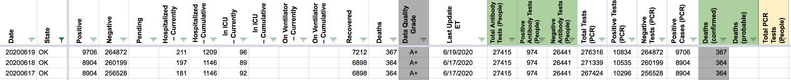

[OK] 6/18 publish missed the daily update
Oklahoma
Front Issue Your most recent data for Oklahoma shows Thursday June 18 the total cases were 8,904 which is the same number as Wednesday for positive cases. However, the State Dept. of Health is showing a 450 jump in cases with a total of 9354 cases.
Link to data source https://covidtracking.com/screenshots/OK/OK-20200618-184250.png
{kind=link}
Oklahoma’s executive order report for 6/18 has the correct numbers. This looks like a state where we are typically off by one day for hospitalization and testing information…that data in the report matches what we have for 6/19, whereas 6/18 has distinct values from 6/17 for testing and hospitalization numbers. For now I’m leaving those as-is; fixing that without screwing up people’s trend analysis would mean a re-sync of all OK historicals (after which we’d once more be off a day going forward).
The more important issue here is we didn’t get an updated number for cases, recovered, and deaths on 6/18 but did get updated numbers for hospitalizations and tests. Therefore I’m patching in the executive order numbers for positives, recovered, and deaths.
Before: 
After: